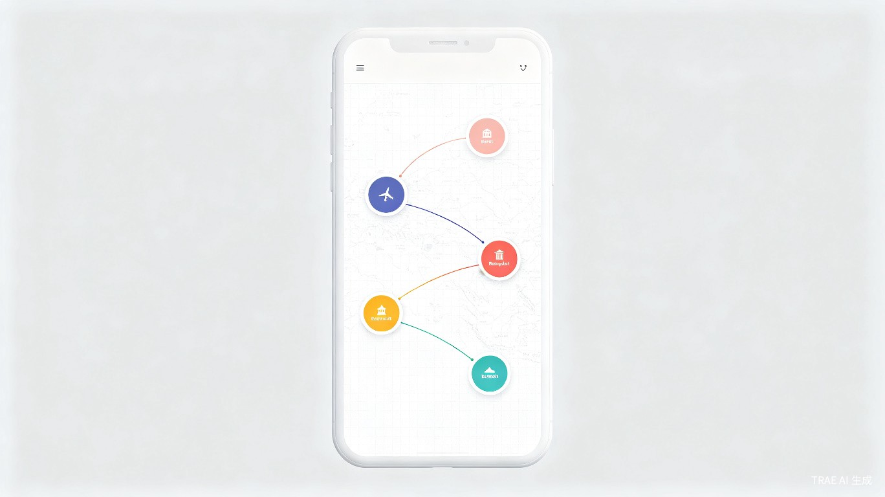
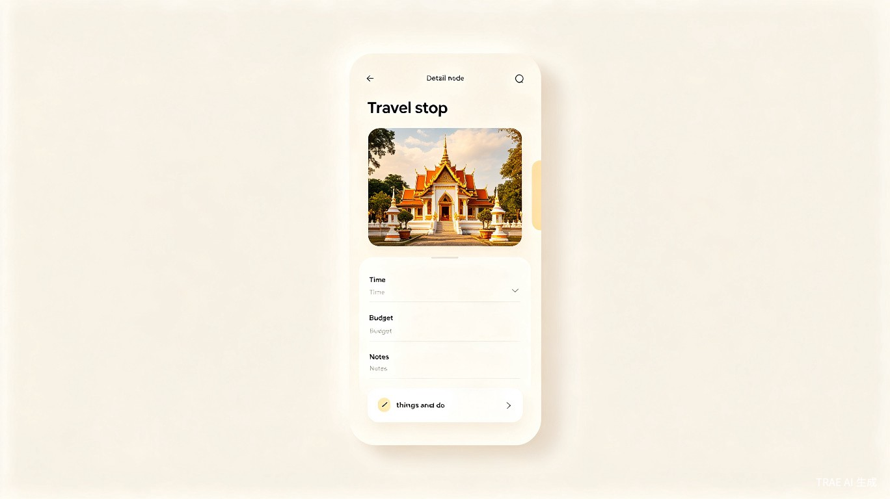
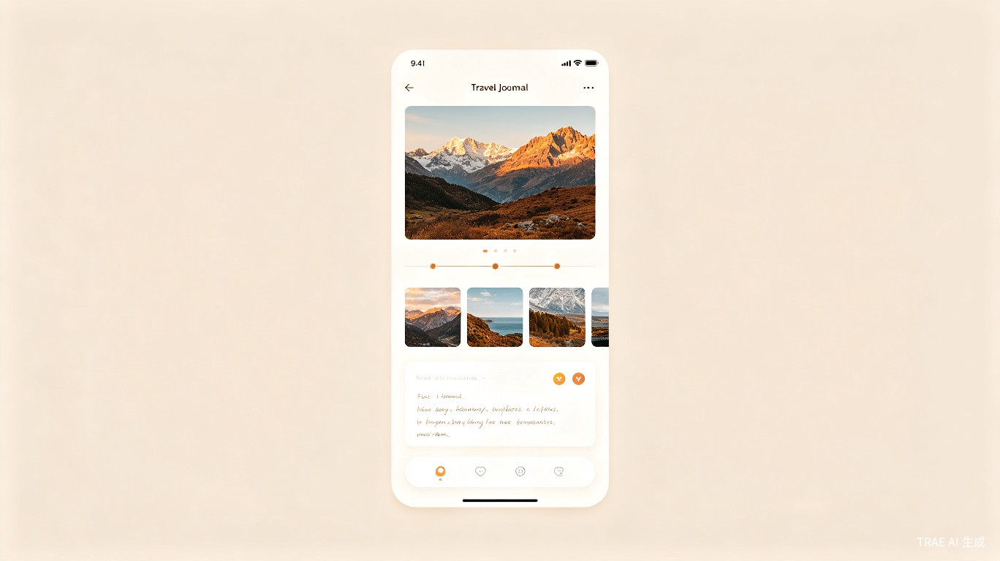
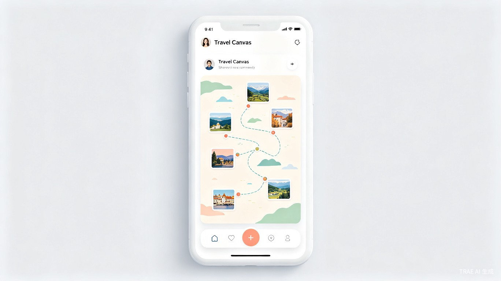

以画布重新定义旅行规划与记录
旅行规划工具和旅行记录工具在过去十年各自发展，却始终没有真正融合。行程规划类产品（携程行程单、马蜂窝 AI 路书、穷游行程助手）以列表或时间线呈现行程，用户可以快速搭建"几点去哪里"的骨架，但缺乏自由表达的空间——行程是工具理性的产物，不是个人创作的载体。日记类产品（Day One、Journey、格志日记）擅长承载情绪和回忆，但与行程编排完全脱节，用户需要同时在两个 App 之间切换。
画布工具（Miro、Notion）提供了自由编排的能力，但它们不是为旅行设计的。在 Miro 上规划行程，没有地图底图、没有地点数据、没有旅行场景的交互优化；在 Notion 里用模板建行程表，本质上还是表格思维。
这中间存在一个明确的空白：一个以画布为核心的旅行产品，让行程编排和旅行记录发生在同一张画布上。用户在出行前用画布规划路线，出行中随时调整，出行后在同一个节点上补充照片、文字和感受。这张画布既是工具，也是作品。
旅行内容创作者（旅行博主、KOL、深度旅行爱好者）在规划行程时，通常需要经历以下繁琐过程：
旅行内容创作者持续忍受工具割裂的体验。随着 AI 行程规划工具的普及（马蜂窝 AI 路书、携程 AI 行程助手），"规划"环节正在被自动化，但"表达"和"记录"环节仍然空白。如果这个空白不被填补，旅行创作者的行程规划将越来越高效，却越来越没有个人痕迹。
旅行手帐是一款面向旅行内容创作者的移动优先产品，核心交互是一张可自由编排的旅行画布。用户在画布上规划行程节点、连接路线、自定义每个节点的细节，出行后在同一张画布上补充照片、视频和感受。画布本身既是规划工具，也是旅行作品。
| 维度 | 描述 |
|---|---|
| 核心用户 | 旅行内容创作者：旅行博主、KOL、深度旅行爱好者，习惯用视觉化方式记录和分享旅行 |
| 使用频率 | 每次出行前后集中使用（每次 2–7 天），非日常高频工具 |
| 核心诉求 | 把行程规划和旅行回忆融合在一个有美感的创作空间里，生成可分享的旅行作品 |
| 次要用户 | 喜欢精心规划行程的普通旅行者，希望行程不再是枯燥的清单 |
与现有产品的关键区别在于"画布优先"的设计哲学。行程不是以列表或时间线呈现，而是以一张可自由编排的画布呈现。每个旅行节点是一个可拖拽、可自定义的元素，节点之间通过连线表达路线关系。画布支持自定义背景（地图、插画、纯色），用户可以像做手帐一样布局自己的旅行。
免费 + 增值订阅。基础功能（创建画布、添加节点、上传照片文字、修改行程）完全免费。高级功能（高级画布模板、更多背景样式、大容量存储、高清导出）通过订阅解锁。
| 产品 | 定位 | 目标用户 | 规模 | 与旅行手帐的关联 |
|---|---|---|---|---|
| 马蜂窝 | 旅游社交平台，内容+交易 | 年轻自由行用户 | 注册用户 1.3 亿+，MAU 约 8000 万 | AI 路书生成行程，但纯文字堆砌，缺乏可视化编排 |
| 携程行程单 | OTA 生态内的行程管理 | 携程生态用户 | MAU 约 7635 万 | 按天管理行程，封闭景点库，无自由画布 |
| 穷游行程助手 | 自由行行程规划工具 | 自由行"懒人"用户 | 百万级用户，4.0 版回归中 | 行程模板一键生成，离线功能强，但无画布和创作能力 |
| Polarsteps | GPS 自动追踪旅行记录 | 环球旅行者、背包客 | 全球 1400 万+用户 | GPS 自动追踪 + 地图可视化出色，但创作能力弱，社区属性弱 |
| Day One | 数字日记/手帐 | 重视隐私和设计感的日记用户 | 1500 万+下载 | 多媒体记录和设计感强，但无行程编排和地图可视化 |
| Miro | 在线协作白板 | 企业团队、产品经理 | 全球 1 亿+用户 | 无限画布自由度高，但非旅行专用，移动端体验差 |
| 小红书 | 生活方式社区 | 年轻女性为主 | 旅行兴趣月活 2.3 亿+ | 旅行笔记分享生态强大，但无行程编排和画布功能 |
| 功能维度 | 马蜂窝 | Polarsteps | Day One | Miro | 旅行手帐 |
|---|---|---|---|---|---|
| 行程编排 | 列表式 AI 生成 | 基础行程规划 | 无 | 自由画布 | 画布式节点编排 |
| 地图/路线可视化 | 弱 | 强（GPS 追踪） | 无 | 无 | 强（画布底图） |
| 照片/视频记录 | 图文游记 | 有（每步限 10 张） | 强 | 有 | 强（节点绑定） |
| 画布自由编排 | 无 | 无 | 无 | 强 | 强（旅行场景优化） |
| 社区分享 | 强 | 弱 | 无 | 有（协作导向） | 中（只读浏览+评论） |
| 旅行场景深度 | 高 | 高 | 低 | 低 | 高 |
市场空白集中在三个交叉点上：

用户创建一张新的旅行画布时，系统生成一个空白画布对象，关联到用户账户。画布支持三种背景类型：地图底图（基于地图 SDK 渲染）、插画背景（预设插画模板库）、纯色/渐变背景。用户可随时切换背景类型。画布采用无限画布模型，通过双指缩放和单指平移浏览不同区域。
节点是画布上的核心元素，代表旅行中的一个停留点或活动。每个节点包含基本信息（名称、地点、时间范围）和扩展信息（预算、待办事项、备注）。节点以卡片形式呈现在画布上，支持自由拖拽到任意位置。
连线表达节点之间的路线关系。用户可以从一个节点拖出连线到另一个节点，形成有向路线。连线支持自定义样式，并可标注交通方式（飞机、火车、自驾、步行等）。

点击节点后，从底部滑出详情面板，展示和编辑该节点的全部信息。面板分为四个区域：基本信息（名称、地点、时间）、预算信息（预算金额、实际花费）、待办事项（可勾选的清单）、备注（自由文字输入）。
| 字段 | 类型 | 约束 |
|---|---|---|
| 节点名称 | 文本 | 1–20 字符，必填 |
| 地点 | 地点选择器 | 选填，支持搜索和手动输入 |
| 开始时间 | 日期时间选择器 | 选填 |
| 结束时间 | 日期时间选择器 | 选填，≥ 开始时间 |
| 预算金额 | 数字 | 选填，≥ 0，支持选择币种 |
| 实际花费 | 数字 | 选填，≥ 0 |
| 待办事项 | 清单 | 选填，最多 20 条，每条 1–50 字符 |
| 备注 | 多行文本 | 选填，最多 500 字符 |
出行过程中，用户随时可以打开画布修改行程。所有修改实时保存，支持离线编辑。当网络恢复后，本地变更自动同步到服务器。

出行完成后（或出行过程中），用户可以在每个节点上补充旅行记录。记录内容包括照片、视频、文字感受。每个节点可关联多条记录，按时间倒序排列。节点卡片上会显示最新一条记录的缩略图，让画布从"规划视图"自然过渡到"回忆视图"。

用户完成画布编辑后，可以将画布发布为公开页面。发布后的画布生成一个分享链接和二维码，其他用户通过链接可以浏览画布上的行程编排、照片视频和文字内容，可以发表评论，但不能编辑任何内容。
用户的主页展示所有旅行画布的列表/网格视图，支持按状态筛选和搜索。每张画布显示封面缩略图（画布的快照或用户自定义封面）、标题、创建时间、节点数量、状态标签。
flowchart TD
A[App 启动] --> B[我的画布]
B --> C[画布列表/网格]
C --> D{选择画布}
D --> E[画布编辑器]
E --> F[添加节点]
E --> G[拖拽编排]
E --> H[节点连线]
E --> I[背景设置]
E --> J[节点详情面板]
J --> J1[基本信息]
J --> J2[预算信息]
J --> J3[待办事项]
J --> J4[旅行记录]
J4 --> J4a[照片/视频上传]
J4 --> J4b[文字感受]
E --> K[时间线视图]
E --> L[分享/发布]
L --> L1[生成分享链接]
L --> L2[公开页面浏览]
L2 --> L3[评论]
B --> M[创建新画布]
B --> N[搜索画布]
B --> O[筛选状态]
| 指标 | 定义 | 目标 | 观测周期 |
|---|---|---|---|
| 画布创建率 | 注册用户中创建过至少一张画布的比例 | ≥ 40% | 注册后 7 天 |
| 画布完成率 | 创建的画布中，添加了 ≥ 5 个节点的比例 | ≥ 30% | 创建后 14 天 |
| 记录补充率 | 出行完成后，在节点上添加了照片/文字记录的节点比例 | ≥ 50% | 行程结束后 7 天 |
| 画布发布率 | 完成的画布中，被发布为公开页面的比例 | ≥ 15% | 画布完成后 14 天 |
| 分享转化率 | 公开画布页面获得至少 1 次外部访问的比例 | ≥ 60% | 发布后 7 天 |
| 埋点事件 | 触发时机 | 属性字段 | 决策用途 |
|---|---|---|---|
| canvas_created | 用户创建新画布 | 背景类型、来源入口 | 评估新用户引导效果 |
| node_added | 用户在画布上添加节点 | 画布 ID、节点位置、是否填写地点 | 评估节点编排活跃度 |
| node_connected | 用户在两个节点之间创建连线 | 画布 ID、源节点、目标节点 | 评估路线编排使用率 |
| record_added | 用户在节点上添加旅行记录 | 画布 ID、节点 ID、媒体类型（照片/视频/文字） | 评估记录功能使用深度 |
| canvas_published | 用户发布画布为公开页面 | 画布 ID、节点数、记录数 | 评估分享意愿 |
| canvas_viewed | 外部用户浏览公开画布 | 画布 ID、浏览来源、停留时长 | 评估内容传播效果 |
预计周期：8–10 周
包含 F01–F06、F08 全部功能。移动端优先（iOS），Web 端提供只读浏览。画布引擎、节点系统、记录系统、离线存储为核心交付物。目标：验证"画布式旅行编排"的产品假设。
预计周期：6–8 周
包含 F07 画布发布与分享功能。新增发现页（浏览其他用户的公开画布）、评论系统、画布点赞/收藏。Android 端上线。目标：验证内容传播和社区互动。
预计周期：6–8 周
新增订阅体系（高级模板、大容量存储、高清导出、去水印）。增强创作能力（贴纸、画笔、自定义节点样式）。Web 端编辑功能上线。目标：建立商业模式，提升创作深度。
预计周期：8–10 周
AI 辅助行程推荐（基于节点地点智能推荐周边景点/餐厅）、多人协作编排、社交平台一键分享（小红书/Instagram）、旅行数据统计（总里程、总花费、到过多少城市）。目标：提升留存和活跃度。
| 风险 | 概率 | 影响 | 应对策略 |
|---|---|---|---|
| 画布引擎性能瓶颈：大量节点时渲染卡顿 | 高 | 高 | 采用虚拟化渲染（视口外节点不渲染），限制单屏渲染节点数，提供"简化视图"模式 |
| 离线编辑与云端同步冲突 | 中 | 中 | MVP 阶段仅支持单设备编辑，冲突场景后续版本处理 |
| 地图 SDK 授权费用超出预期 | 低 | 中 | 评估多个地图 SDK（高德、百度、Mapbox），选择性价比最优方案 |
| 多媒体存储成本增长过快 | 中 | 中 | 严格控制图片/视频压缩策略，免费用户设置存储上限，订阅用户按需扩容 |
| 风险 | 概率 | 影响 | 应对策略 |
|---|---|---|---|
| 画布交互学习成本高，用户不知道如何开始 | 中 | 高 | 提供新手引导（首次创建画布时的交互式教程）、预设模板（一键生成示例画布） |
| 用户使用频率低（旅行非日常需求） | 高 | 中 | 通过社区分享带来回访（浏览他人的画布），推送旅行灵感内容保持存在感 |
| 竞品快速跟进画布功能 | 低 | 中 | 抢先建立创作者社区壁垒，画布模板和创作生态构成护城河 |